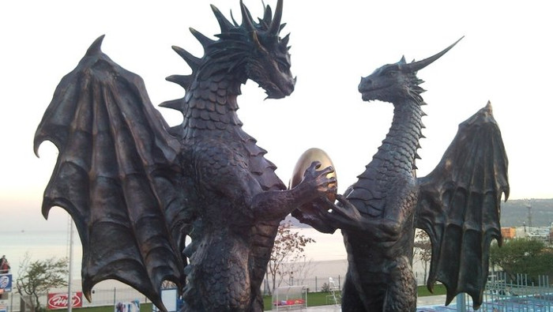
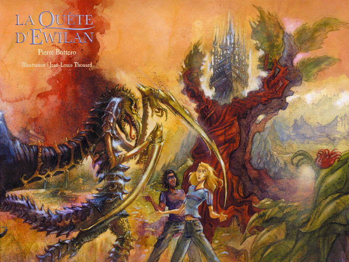

Les créatures fantastiques
Que ce soit dans un récit fantastique, merveilleux ou de fantasy, l’auteur a souvent besoin d’introduire des créatures imaginaires pour faire avancer son intrigue ou, tout simplement, pour rendre plus crédible son monde fictif. Je vous propose ici de parler un peu de ces animaux extraordinaires, d’en citer quelques uns. Cela vous fera peut-être réfléchir aux moyens d’inventer vos propres bêtes.
Les créatures mythologiques
De manière générale, on distingue le mythe et la légende, bien que les créatures extraordinaires peuvent apparaître dans les deux.
En effet, le mythe renvoie le plus souvent à des croyances sur le fondement du monde, de l’Homme et de ce qu’il est devenu, impliquant des dieux, des créatures chimériques, des personnages dotés de pouvoirs particuliers ou mi-hommes, mi-bêtes, ou encore des animaux dotés d’une intelligence remarquable. Les évènements d’un mythe se situent à une époque très lointaine, indéfinissable de mémoire d’homme.
La légende se réfère généralement à des évènements historiques réels qui ont été retranscris, répétés et modifiés à travers le temps. Un homme est souvent au cœur de l’histoire et ses actes remarquables sont embellis et expliqués par sa rencontre avec une créature mythique. L’inverse n’est pas possible. Les héros d’une légende ne figurent jamais dans les mythes, car ils restent humains et ne peuvent apparaître à une époque ancienne que l’on ne sait pas situer.
Puiser son inspiration dans la mythologie, grecque ou égyptienne, peut être un bon moyen d’introduire des créatures fantastiques dans votre récit. Vous pouvez les emprunter telles quelles, ou encore partir de l’une d’elles et la transformer à votre sauce.

Ainsi, on retrouve par exemple le Sphinx dans L’histoire sans fin sous la forme de deux grosses statues de pierre très agressives qui font passer un sale quart d’heure à Atréju ! Cette créature à l’apparence entre le lion, l’aigle et la femme apparaît aussi brièvement dans Harry Potter et la coupe de feu (pour citer quelque chose que je connais bien), mais avec un air bien plus sympathique – bien qu’elle menace de tuer Harry s’il ne trouve pas la bonne réponse à son énigme – et un aspect plus vivant, comme celui d’un animal en chair et en os.
Une classification générale
On retrouve souvent, dans les récits fantastiques, des créatures telles que le vampire, le loup-garou, les morts-vivants, les monstres patchworks (comme la créature de Frankenstein), les monstres issus de manipulations génétiques ou scientifiques (Mr Hyde), etc. Ces personnages inquiétants et dangereux contribuent à générer de l’angoisse chez le lecteur. On peut aussi rencontrer des extraterrestres qui remplissent aussi très bien ce rôle.
Pour créer une atmosphère angoissante et étouffante dans un récit fantastique comme ceux de H.P. Lovecraft par exemple, il y a du boulot !
Il a tellement travaillé ses créatures et les histoires qui tournent autour (Cthulhu, Nyarlathotep et tous leurs copains qui sont appelés les « Anciens » et qui seraient arrivés sur Terre bien avant l’apparition des hommes) qu’il est devenu difficile de savoir s’il a tout inventé ou s’il s’est basé sur des mythes réels.
Au contraire, dans les récits de fantasy, on retrouvera plus souvent les elfes, les nains (qui ne se détestent pas forcément d’ailleurs), les magiciens (pas toujours humains), les nymphes, les fées, les lutins, etc. Ce sont des créatures féeriques que l’on rencontre volontiers dans les récits de fantasy médiévale (comme compagnon de chevaliers ou assistance du royaume) ou encore de hard fantasy (comme en Terre du Milieu dans l’œuvre de Tolkien). Ces personnages souvent bons et au noble cœur peuvent avoir affaire à des sorcières, des trolls, des ogres, des goules, des orques, des gobelins, des dragons, etc. Rien ne vous empêche de vous servir de ces créatures à la réputation ignoble pour en faire de bons samaritins ! Prenez Shrek par exemple, c’est un gentil ogre, ou Kiki qui est une sorcière très serviable (Kiki la petite sorcière de Ghibli) ou encore Krokmou et tous ses amis qui sont en réalité de bons dragons (Dragons).
J’aime beaucoup les dragons. Ils occupent souvent la place d’honneur dans un récit de fantasy. Ils peuvent aussi bien représenter un obstacle à franchir (Le hobbit) que des alliés pour résoudre les problèmes (Dragons). Il est possible aussi qu’ils aient disparu depuis longtemps, mais qu’ils reviennent de manière inattendue (Skyrim). On peut moduler leurs caractéristiques pour qu’ils nous correspondent. Ils sont un compagnon de récit idéal !
Dans un récit de science-fiction on parle plus volontiers de créatures extraterrestres, et elles peuvent tout aussi bien être monstrueuses si vous voulez raconter une invasion ou un cataclysme, ou très drôles et attachantes si vous préférez relater une comédie ou une histoire d’amitié (E.T.).
La réalité
Si on veut ajouter des êtres spéciaux ou des créatures plus phénoménales à nos récits, il est aussi possible de se référer à des animaux que l’on a l’habitude de voir dans notre monde (des vaches, des moutons ou pourquoi pas des moustiques). C’est ce que fait Pierre Bottero dans Les mondes d’Ewilan où il a créé les siffleurs (des mammifères ruminants qui sont élevés pour leur viande et leur lait), les Ts’liches (des monstres géants à l’allure d’insecte avec des pinces de menthe religieuse dont il y a une illustration juste en-dessous) et autres bestioles peu commodes. D’ailleurs, comme on en a déjà parlé dans un article portant sur la fantasy, pour que le lecteur s’y retrouve dans votre monde et qu’il comprenne son fonctionnement, il faut garder des liens forts avec notre monde réel comme des points de repères.
Créer sa propre créature
De nombreuses sources d’inspirations sont disponibles sur internet ou dans les livres. On trouve des bestiaires ou des encyclopédies spécialisées dans les monstres ! Le mieux, c’est quand même de trouver les nôtres pour qu’ils correspondent à notre récit. Il serait un peu présomptueux de prétendre qu’il existe des étapes à suivre pour inventer un monstre. Je voulais vous parler du vampire et de son origine, en pensant naïvement que sa notoriété lui venait du roman de Bram Stocker et de son personnage Dracula, inspiré d’un comte sanglant appartenant à l’histoire. Après quelques recherches, j’ai découvert qu’il n’en était rien et que c’est bien plus complexe que cela !
Pour résumer, le vampire existe depuis des siècles. Le terme serait apparu, en gros, pour désigner des malades avec des problèmes de sang et au fil du temps, il aurait été attribué à des morts revenant à la vie pour tourmenter les vivants (probablement ces mêmes malades qui ne devaient pas être tout à fait morts…) Bref, l’origine du vampire est floue et soumise à des interprétations différentes selon les pays. Un article immense de wikipédia essaye de détailler tout cela. Il est très intéressant et certains passages sont hilarants ! Amusez-vous bien :)
Quant à Bram Stoker, il vit au XIXème siècle, dans un contexte sanglant marqué par les méfaits de Jack l’Éventreur à Londres. Baigné par des légendes folkloriques et des lectures sur les vampires, il s’intéresse à des personnages historiques connus pour être des tyrans sanguinaires, ainsi qu’à la découverte récente d’une chauve-souris buveuse de sang en Amérique du Sud. Tout cela a sans doute contribué à la création du Comte Dracula qui sera le vampire le plus marquant de la littérature et le point de départ de nombreuses modulations du vampire et de ses caractéristiques principales telles que nous les connaissons aujourd’hui :
- ne supporte pas la lumière du jour
- craint les crucifix et l’eau bénite (parce qu’il est damné)
- possède des canines plus longues que la normale
- boit le sang humain
- possède des pouvoirs hypnotiques
- séduit ses victimes (ce qui n’existait pas avant)
C’est peut-être comme cela qu’il faut faire. Partir de quelque chose qui nous tombe sous le nez, qui se passe à notre époque ou que l’on a découvert dans de vieilles légendes, et réfléchir à ce que cela nous évoque.
Par exemple, si durant une balade je tombe sur un cheval taché comme une vache (vous savez, les noires et blanches qui donnent beaucoup de lait, les Prim’holstein) et que je dis, sans vraiment y penser :
Oh, un cheval-vache !
Peut-être que je devrais garder ça dans un coin de ma tête et y réfléchir. Ce pourrait être un bon point de départ pour inventer un mammifère particulier dans mon monde fictif.
Et vous, comment vous y prenez-vous pour créer vos créatures fantastiques ou vos monstres ? Moi je suis actuellement en pleine recherche d’une bête ou d’une sorte de « voleur de vie » qui pourrait remplacer le traditionnel vampire dans une histoire que j’ai sur le feu. Ça bouillonne sec sous le casque !